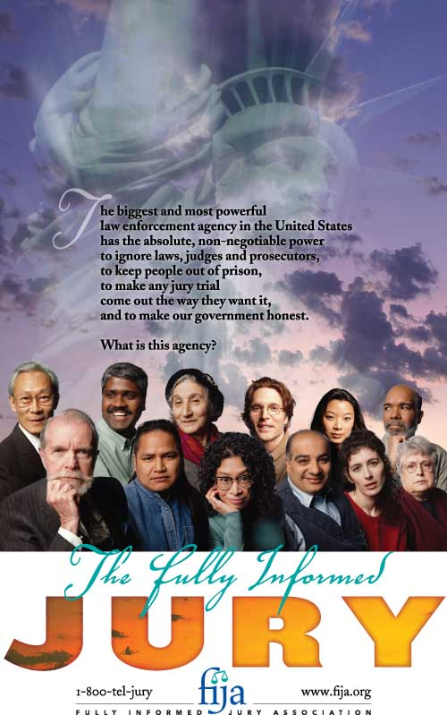

The First Branch

Above is a popular poster distributed by the Fully Informed Jury Association. In case the poster appears too dark to allow for easy reading, I've typed in the words here: "The largest and most powerful law enforcement agency in the United States has the absolute, non-negotiable power to ignore laws, judges, and prosecutors to keep people out of prison and to make any jury trial come out the way they want it, and to make our government honest. What is this agency? The Fully Informed Jury.
~
The First Branch
Honorable Madam Chair, Judiciary Committee, Montana House of Representatives
The U.S. Constitution is the founding legal document which created our nation
and our nation's system of representative self-governance. As such, it is this
government's founding legal charter, and it defines the duties of the Federal
government. As such, it defines the responsibilities of the Federal government.
As such, it sets forth the limitations within
which the Federal government must act. The U.S. Constitution defines the Federal
government, commissions the Federal government to action, legitimizes and
authorizes the Federal government, and defines well the limits of Federal power
over the several States and the individual citizen. The U.S. Constitution is a
legal document, and it is the supreme document authorizing the existence of the
Federal government. The U.S. Constitution is the legal charter which established
the commonly-known "three branches" of the Federal government.
Thus, the first three branches of government, provided to, existing within, and
empowered by the Constitution of the United States of America (USA), exist at
the very foundation of law and as the cornerstones of law. The first three
branches of government extend by design into and throughout the subscribing
several states, which to large degree resemble upon the state level that
structure of governance created at the Federal level. We name in our national
language those three branches of government: the “Executive” branch, the
“Legislative” branch, and the “Judicial” branch.
But there is another branch of government which today is commonly forgotten and
seldom upheld. This forgotten branch of our government is in fact largely denied,
in practice and by court statement, when judges give instructions to jurors in
courtrooms across the nation. The American citizen has for the most part
completely forgotten about this first branch of government. As we have seen
elsewhere, the knowledge and perception of today's American citizen has largely
been usurped - by design, by intent, and with great deliberation by subversive
elements operating inside American social, cultural, economic, and political
institutions, and, inside the Federal government. Recall: the NEA, the Federal
Reserve System, Inc., the PNAC and CFR and their ilk, the tax-exempt
Foundations.
Indeed, the existence of this first branch of government, once
considered to be self-evident and universally obvious to all sense-possessed
citizens everywhere, dwells in today's political and social climate only in the
obscurity of old law cases and dry history books, with hardly an exception.
That first branch of government is the American twelve-person “Jury”. It has
been called
the “Jury branch”.
It has also been called "The Fourth
Branch". But when I discussed this branch of government with Ms Iloilo Jones of
the Fully Informed Jury Association, she noted for me that she prefers to call
it the "first branch". Giving me her reasons why she preferred that title over
the "fourth branch", she told me that calling the Jury the first branch of
government places the proper emphasis on the entire legal structure of the U.S.
Constitution, and echoes truly the proper position of "We the People" in the
design of our great nation. This is our country, our government, and our
rightful legal system. Our safeguard against losing that precious right is the
twelve-person jury. Armed with the power of knowledge, our juries across America
can work mightily on behalf of justice to the American people and help check
corrupt powers in governmental offices and agencies.
Most Americans today have not been fully informed about their first branch of
government, despite the fact that this branch of government is as integral to
the creation of our government as are the other three branches. In fact, when I
say that the “Jury” is the first branch of government, the general reader
commonly, immediately, discounts that statement in an attempt to humor me. Most
Americans and Montanans try to qualify my
statement as merely my use of “poetic license”. One thinks to oneself: “Surely he is joking –
everyone knows there are only three branches of the U.S. Federal government.”
But the truth is that the Jury is our first branch of government, and that truth shall withstand even the most acute and severe scrutiny by any reader of history.
It may be said, at least for conversational purposes, that those
villains who've stolen the other three branches of government see great
advantage in suppressing the public's knowledge of the first branch.
As we shall read below, "A right concealed is a right denied". Totalitarianism, fascism, or rule by Oligarchy and Plutocracy cannot function in
our Republic of laws whenever the first branch is brought to bear by the people
themselves. Without that first branch, however, all manner of usurpation
becomes possible. Seeing clearly the truth in this, our Founders wisely included
the fourth branch of government in this nation's founding legal document. It was
included to protect each individual's freedom, liberty, and right to justice
under the common law. The forces who work for the New World Order's one-world
government know this perfectly well, and that is why public knowledge of the
first branch of government is not taught in, and has been largely removed from, the curriculum
of the public education system.
Because the first branch is one of our most important keys for protecting
American liberty and freedom against the tyranny of government, and because that
tyranny has never breathed so closely down the neck of the American citizen, let us now look
into it together.
~
In a small but powerful booklet (1) which was copyrighted in 1996, former
Washington State Supreme Court Justice William Goodloe gives an
accounting of the origin and establishment of our present-day jury powers. I
would like to share with you some passages from his essay entitled:
“Jury Nullification: Empowering The Jury As The Fourth Branch Of Government”
~
Quoting former Washington State Supreme Court Justice William Goodloe:
Of all the great trials in history tried at Old Bailey in London only one is
commemorated by a plaque. Located near Courtroom Number Five it reads:
“Near this site William Penn and William Mead were tried in 1670 for preaching
to an unlawful assembly in Gracechurch Street. This tablet commemorates the
courage and endurance of the Jury. Thomas Vere, Edward Bushell and ten others,
who refused to give a verdict against them although they were locked up without
food for two nights and were fined for their final verdict of Not Guilty. The
case of these jurymen was reviewed on a writ of Habeas Corpus and Chief Justice
Vaughan delivered the opinion of the court which established the Right of Juries
to give their Verdict according to their conviction.”
The case commemorated is Bushell's Case, 6 Howell's State Trials 999 (1670).
This case is a good beginning for tracing the roots of a legal doctrine known as
jury nullification.
The year was 1670 and the case Bushell sat on was that of William Penn and
William Mead, both Quakers, who were on trial for preaching an unlawful religion
to an unlawful assembly in violation of the Conventicle Act. This was an
elaborate act which made the Church of England the only legal church. The facts
clearly showed that the defendants had violated the Act by preaching a Quaker
sermon. And yet the jury acquitted them against the judge's instruction. The
Conventicle Act was nullified by the jury's not guilty verdict and the
infuriated judge fined the jurors and jailed them until such time as their fines
should be paid.
Edward Bushell and three others refused to pay the fines. As a consequence they
were imprisoned for nine weeks and Bushell filed a writ of habeas corpus. He and
the other recalcitrant jurors prevailed in the Court of Common Pleas, and the
practice of punishing juries for verdicts unacceptable to the courts was
abolished. Thus was re-established the right of jury nullification, an ancient
right expressed in Magna Carta and dating from Greek and Roman times. And the
jury's nullification verdict in the case, the trial of William Penn, established
freedom of religion, freedom of speech, and the right to peacefully assemble.
These rights became part of the English Bill of Rights, and later, part of the
First Amendment to the United States Constitution. The man whom the courageous
jurors had saved, William Penn, later founded Pennsylvania and the city of
Philadelphia in which the Declaration of Independence and the United States
Constitution were written.
Definition
According to the doctrine of jury nullification, jurors have the inherent right
to set aside the instructions of the judge and to reach a verdict of acquittal
based upon their own consciences. As abolitionist lawyer Lysander Spooner
explained the doctrine in Trial By Jury in 1852, page one:
“For more than six hundred years – that is, since Magna Carta, in 1215 – there
has been no clearer principle of English or American constitutional law, than
that, in criminal cases, it is not only the right and duty of juries to judge
what are the facts, what is the law, and what was the moral intent of the
accused; but that it is also their right, and their primary and paramount duty,
to judge of the justice of the law; and to hold all laws invalid, that are, in
their opinion, unjust or oppressive, and all persons guiltless in violating, or
resisting the execution of, such laws.”
History Of Jury Nullification
News of the rule in Bushell's Case traveled across the seas and had a profound
impact in the New World.
In 1735 in the colony of New York, John Peter Zenger, publisher of the New York
Weekly Journal, was tried for seditious libel for printing articles exposing the
corruption of the royal governor. This is perhaps the most important trial in
American history because the jury in this case established the rights of freedom
of speech and of the press in America by nullifying the seditious libel law
which made it a crime to criticize public officials regardless of whether the
criticism was true. The Zenger case has been cited by newspapers and history
books across the land as the 'great case' which laid the foundation for freedom
of the press in the First Amendment to the United States Constitution. Although
this case is often referred to, the substance or hinge upon which the case
turned, jury nullification, is less well known.
Andrew Hamilton, Zenger's attorney, argued jury nullification directly to the
jury and gave his opinion of the law to the jury in direct opposition to the
instruction of the trial judge. The Zenger case, and the jury's nullification of
the law in that case, established freedom of the press and was within living
memory of some of the Founding Fathers and within common knowledge of all of
them.
After Zenger, American colonial common law gave the major role in law to the
jury. For example, judges in Rhode Island held office “not for the purpose of
deciding causes, for the jury decided all questions of law and fact; but merely
to preserve order, and see that the parties had a fair chance with the jury.”
Similar practices were followed in other New England colonies. See Eaton, The
Development of the Judicial System in Rhode Island, 14 Yale Law Journal 148, 153
(1905) as quoted in Howe, Juries As Judges Of Criminal Law, 52 Harvard Law
Review 582, 591 (1939).
End quoted passages from former Washington State Supreme Court Justice William
Goodloe's essay.
~
I think we all shall agree that some things are amiss in today's courtrooms, where daily across this nation the vast majority of criminal trial judges admonish respective juries that "if the evidence shows that the defendant violated the law, you must convict". That is simply not true, and when a judge tells that to a jury he is lying - the jury does not have to convict, despite an obvious infraction of the law by the defendant, because as we now see clearly, the jury has a duty to judge the law as well as to judge the facts presented against the defendant. I shall furnish an hypothetical example.
Let us imagine for a moment that I were to stand on the courthouse steps and smoke a marijuana cigarette and subsequently get myself arrested for violating government's laws prohibiting the possession of marijuana. In today's repressive governmental environment I would of course be promptly arrested and charged. Then I would appear before a judge during arraignment, whereupon I would indeed truthfully admit that I certainly was smoking marijuana at the time of my arrest, and that I was doing so as a personal protest against this government's insane War on Drugs. The charge against me would stand and I would be given a court date, for which I would demand my right to a trial by jury.
At the beginning of my trial by jury the predictable instructions by the judge to the jury would most likely declare that if proceedings proved that I had broken or violated the law then the jury therefore, in light of offered evidence, sworn testimony, and my own confession, "must convict", and that I must face the court's appropriate sentence according to scheduled penalties for said crime. That is the customary way it is done in America's countless courtrooms today. "If the evidence shows beyond a reasonable doubt that the defendant violated the law, you must convict" is the usual and general instruction to the jury by the judge.
But the truth is that the jury has every right to decide that in this particular case, in this particular courtroom, irregardless of the facts brought against me and my own confession, the law itself, under scrutiny of each juror's conscience, may be nullified and rendered inapplicable in that courtroom, in my case. The jury is quite free to, and empowered by law to, weigh other concerns, such as these two important facts which the court's instructions to the jury usually omit: 1) there is no victim in my "crime"; and, 2) the law itself denies me the full and constitutionally-protected right of self-ownership.
A jury of my peers, who of course would be aware individual sovereigns, could, if that jury was so inspired by its collective conscience, excuse my marijuana-smoking on the grounds that as an American citizen I am expected to own my body as any self-owner would, and that the anti-marijuana law itself deprived me of ownership over my own body by seeking to dictate what I may and may not put into my body. In such a case the jury simply would nullify the law right there in the courtroom in open defiance of the instructions of the court, and set me free.
That is an hypothetical example of the power inherent in America's twelve-person jury system, and it is one of the last strongholds against tyranny-by-government that still remains for us today. In another example which is not hypothetical but instead is a matter of historic record, and which parallels my given hypothetical example, American history shows that the role of juries played a major part in forcing government to repeal and abolish the Prohibition laws of the 1920s and 1930s.
Juries all across America began to refuse to convict, and the law-enforcement community was left with the quandary in which it became pointless to arrest the rural moon-shiner. That jury-activism, repeated again and again in countless courtroom trials across America, finally carried the will of the people to its resounding triumph over the oppressive and un-Constitutional laws of Prohibition. It can happen again today, which is exactly why Americans have been deliberately kept in the dark about their rights and powers as jurors.
In keeping the knowledge of a jury's lawful powers away from public awareness, the government sponsored public schools have played a large role. Also contributing to the general ignorance of the average American on this matter has been the main-stream media and the press - but as we've already seen herein, the public school system, the media, and the press have long been in the control of the tax-exempt foundations which dominate them. Evil men who would seek to govern Americans outside the legitimate parameters of constitutional government cannot easily do so as long as the public remains aware of the powers of the fully informed jury.
But of course evil men still do try to control the lives of Americans. Through the twenty-four decades of American history the Judicial Branch of government has worn more and more corrupt. Today's American speaks freely of "legislating from the Bench", especially in the wake of the recent Kelo ruling. Americans are growing increasingly wary of the Judicial branch, just as they are of the Executive and the Legislative branches. Now we know that our due recourse awaits the re-awakening of the twelve-person jury of our good neighbors and peers, and we know that we indeed possess a Fourth Branch of government after all.
I shall return momentarily for some more from former Justice
Goodloe's booklet, but first let us take a look at some rather acute
consciousness which has arisen in answer to the countless abuses of the superior common
law by the Judicial branch in the United States of America.
Those who hold “Judge Jobs”
Above, we've seen that history and our nation's own founding legal documents
exist to secure our rights, including our rights to freedom of religion,
freedom of speech, and the freedom to peacefully assemble. Without those rights the
United States, I declare, would not have become the great nation our families
have come to enjoy. Such basic unalienable rights are rights which cannot be
granted or given by any earthly government, but are inherent rights which were
so valued by this nation's founders as to be preserved forever in the first
Amendment of the United States of America Constitution.
In other words, this Federal government was created in part to protect rights
which predate governments, to protect rights which are present in each soul at birth and are inherent
in the individual citizen. The government was not invented to give us those
rights. No state or government, being man-made creations, may legitimately hold ultimate
authority over the individual human soul and each soul's inherent, unalienable
rights. This nation's founders in consensus agreed that those rights are borne
to each new person by virtue of his passage through the bone gates of birth. Our
lawful government was created to recognize and protect our rights, and it is
sheer folly and ignorance which would have any American citizen believe that the
government gives him his rights. The
most powerful document in human history, the American Declaration of
Independence, conveys cognizance of that fact, and the Bill of Rights in our own
Constitution guarantees it, and by that eternal principle America has thrived.
Shall I repeat it?
The U.S. Constitution clearly states its duty to recognize and protect those
rights. It does not state that it created those rights, because the men who
created the government knew full well that our rights are inherent in the
individual, that those rights existed before any government, and that our
particular government was created to
protect those rights for the individual. Any reading of the U.S. Constitution which
would deny that is a reading done in mis-interpretation, in ignorance, or in malice.
Because this point of law is so alien to the programming and conditioning of
recent generations of American citizens
I repeat and expound yet once again:
While it adds a formal legitimacy to our rights, a legal recognition of
our rights, and acknowledges that those rights
are pre-existing and inherent in the individual, the U.S. Constitution does not propose to “grant”
or “give” us our rights. Instead, it simply declares its duty, its obligation,
and its responsibility to recognize and protect those rights. This is very
important for every American to distinguish today, for the statism which
presently is
usurping our liberties and freedoms hinges much upon the average American's
ignorance of that fine point. Shall I say it again? Government does not give us
“rights” - government was created to recognize and protect our pre-existing inalienable
rights.
That said, we now note that American courts almost unanimously use the tactic of instructing the jury
to convict if the evidence shows the defendant violated a law. So we must ask
why our once-representative court system permits such transgression of the
common law.
I must ask: could it be that the “authority” of government is seeking of its own
volition and momentum to deepen its grip over the American citizen by such blatant falsehood
now issuing from the mouths of judges? Has our court system become corrupt? How
wide-spread is that corruption? Does that corruption rise to the top tier of the
Judicial branch itself? To look at what is behind my questions here,
let us turn now to some writings from
the American Jury Institute and the Fully Informed Jury Association,
whose national headquarters are located at Helena,
Montana: (2)
To the Justices of the Supreme Court of the United States of America:
The questions herein are within the jurisdiction of the US Supreme Court.
The American Jury Institute, and citizens acting on the
knowledge conveyed by the American Jury Institute and also with knowledge
conveyed by the
Fully Informed Jury Association, seek to obey the law. Because there is no
known human ability to obey an unknown law, we must be informed of the law to
obey the law.
Law which is held secret upon citizen request that it be revealed, if it exists,
is thereupon rendered null and void, without the effect or enforceability of
law, by law and the highest reasoning of law.
Persons holding the duty to reveal the law upon request, must reveal it as it is
written, and certify it as prevailing above inferior laws, under penalty of law.
Accumulated ambiguities and contradictions saturate law and its
administration in this nation, in flagrant violation of the prevailing common
law, to a current extent that is repugnant to the rule of written law, and
threatens its future. The judicial industry of lawyers and judges who have
seized exclusive ownership of the law, and rendered it unknowable to fully
literate citizens, at stifling cost to society, indicts the Judicial branch.
Those contradictions are repugnant to the rule of written law, and functionally
nullify its effect.
The questions which follow are asked with the greatest respect for the common
law, and the institutions and persons wisely administering it, as written, for
the freedom and prosperity that the common law secures for future generations.
You are the only prevailing
authority for the answers to these questions as these questions seek to resolve
the entrenched ambiguities and contradictions created on related record by lower
court judges.
If no persons hold the tax-paid duty to publicly reveal the written law,
immediately upon public request, and certify it as prevailing, under penalty of
law, then this nation is not and cannot be under the rule of law.
The Questions
Question 1: Do each of the instructions that a court judge might state to the
jurors conform to the prevailing law uncontradicted by any higher law? Note: If
your answer to question number 1 is "yes", please fully reveal the common law
identifying each of those instructions.
Question 2: May a court judge lawfully instruct jurors, and thus create demands
upon jurors, with any substitute rendered in place of the highest uncontradicted
law itself which is related to the instruction?
Question 3: Does a court judge hold the authority to state his personal opinion
or advice, with power of office and implication of authority in law, as
instructions that create demands or the implication of demands upon jurors?
Question 4: May a juror lawfully refuse to answer any questions relating to the
reason for the juror's decision regarding a court case?
Question 5: May a court judge lawfully require, force or intimidate a juror into revealing the reason for the juror's decision in regard to a court case?
Question 6: Can a juror lawfully refuse to answer any questions
of judges or lawyers, other than his name, address and any direct association
with the accused, as a right, and, in so refusing, continue and retain the
unprejudiced right to serve on a jury?
Question 7: In the absence of evidence of external influence, and when the
decision of a juror is purely within his or her conscience, and in innocent
contradiction of a judge's instructions which are imposed under implication of a
demand of law, is it possible for a court judge to ascertain the reason for a
juror's conclusions if the juror refuses to answer any questions asked by the
judge or other government officers?
Question 8: If there is no possible way to ascertain the reason a juror made his
or her decision with respect to a verdict rendered in a case, from questioning
the juror, if that juror refuses to reveal that reason, are not instructions to
the jury, which would limit any such reasons, merely intimidation, and a
statement of the intellectual inability of a court judge?
Question 9: Does a juror hold the lawful authority to make a decision of guilt
or innocence, based on the conscience of the juror, in direct contradiction to a
court judge's instructions to the jurors?
Question 10: If your answer is no, to question number 9 above, by what authority
in what uncontradicted prevailing common law, revealed and certified as such, is
that answer supported?
Question 11: Is it possible for court judges, including Supreme
Court justices, to make an error, or to intentionally seek to damage a person,
in identifying or applying a law?
Question 12: Is it possible for a court judge to make an error, or to
intentionally seek to damage a person, in identifying or applying a law within
the instructions to a jury, or in an oath required of jurors?
Question 13: Does a defendant and counsel for a defendant, or respondent, in
court hold the lawful authority to inform the jurors that the judge could make
an error in the instructions to the jury?
Question 14: Do all court judges know all of the laws?
Question 15: Have all court judges always applied the correct laws?
Question 16: Have any decisions of any judges been overturned by higher court
judges, to thus prove that some judges make mistakes in applying the law?
(End excerpted questions from the list of questions for the Supreme Court of the United States of America by the Fully Informed Jury Association.)
~
There are more than sixty questions in the writing project which FIJA shared with me, and each of those questions inspires new thought and new questions when contemplated, but for the sake of brevity I have omitted all but the above. Just the few questions listed above indicate that a valid inquiry would benefit the American system of justice and serve to preserve and protect the liberty of the individual American citizen. FIJA assures the judges that: "We seek to obey the prevailing law, and thus request that we be informed of said law so that we may know it to obey it."
~
In reading the above broadside by the Fully Informed Jury Association we note, among other very interesting things, that the legal position of the twelve-person jury, in relation to its duty before the court, is defined without stating a definition but instead by simply asking questions. For that we may thank Ms Iloilo M. Jones of AJI/FIJA and friends. We see that the twelve-person jury's legal power to operate within the jurisdiction of a court of law is not limited to a judge's instructions or other limitations such as "Color of Law" and/or "Rules of the Court". We see that the twelve persons who constitute a jury are not "officers of the court".
Therefore we see that any judge who tells the jury that "if the facts and evidence show that the defendant violated the law, you must convict" is simply lying to the members of the jury, and of course that judge is himself committing a violation of law by giving that instruction to the jury. The lovely, liberating, justice-bearing truth is that the jury can judge the law in that judge's courtroom as well as judging the facts of the case before it.
Our forefathers, this nation's founding fathers, duly considered this bastion of liberty in creating the United States of America. It is our tradition and it is our Right. Any government employee who would tell any citizen differently is either intentionally lying or is ignorant of the law.
A twelve-person jury holds a unique power which is brought to the American courtroom on behalf of We The People. By that unique power the entire system of American justice may finally be purged of any corruption which may have been inserted through the personality or preferences or personal perceptions of an individual judge, or through the inferior, contradicted laws which may have been left on any jurisdiction's law books for whatever reason. By judging of the law as well as of the facts of the case before the jury, the twelve citizens are exercising the supreme power of We The People. It is the people's check upon the balances of power as arrayed in the nature and structure of American government. It is a vital part of what made America the greatest nation on earth and the stronghold of personal liberty and freedom.
The jury is one of the most important features of our heritage. But now let us look at this from another perspective. As we have been looking into my premise which states that America is under siege from within, we have noticed that the entire public school system has been turned into a massive mind-control device designed to mold and regulate citizen behavior (note: is the power of jury-nullification taught in today's government-funded schools?); that the entire monetary system has been usurped and placed in the hands of a few elite international bankers and is now being used as a weapon against American social and cultural institutions and traditions; that our entire system of law enforcement has been assaulted to the point that the CIA has become the world's largest producer, transporter, and marketer of opium and cocaine; that the Supreme Court and lesser court systems operating under the Supreme Court's ultimate jurisdiction have usurped righteousness at its core by legislating from the bench; that the government's capacity, whether legal under superior law or not, to issue license has been corrupted into a huge national database of "citizen-consumer" control; that what used to be the people's U.S. Congress has rolled over obediently to every whim of the Executive; that Christianity itself has been placed under direct siege; that American politics has been subverted into a cesspool of "inter-dependence" within a symptom called international globalism; that in general the defensive (and therefore morally-just) purpose of the U.S. military has been hijacked and reassigned the role of an international police force tasked with protecting American and multi-national corporate trade lanes all around the planet; and numerous other offensive grievances have been laid upon the back of the American middle-class citizen.
Now we are confronted with a phenomenon which might cause Perry Mason to turn in his grave. The individual American's last line of defense against such usurpations is itself under siege. The twelve-person fully-informed jury is itself under attack by the Judicial branch, from within. That attack is implemented under an invisible flag which among other handles we may call the "good old boys network". When a man holding a judge job can sit dressed in black above a jury and tell that jury that the facts, and the facts alone, must determine the jury's concluding verdict, he is lying and he is committing a crime and he is attacking our judicial system. To illustrate that point more clearly, let's return briefly to former Justice Goodloe's writings.
~ Begin quoted passages from Justice Goodloe, in the section entitled "The Navigation Acts and the Declaration of Independence":
The Declaration of Independence, America's birth certificate, lists the reasons compelling us to separate from England. One of the reasons listed against the King and Parliament is - "For depriving us in many cases of the benefits of Trial by Jury". There is an important story here.
To raise taxes Parliament had passed the Navigation Acts requiring all trade with the colonies to be routed through England so that England could collect duties. Smugglers, such as John Hancock and other Founders, defied the Navigation Acts and brought tax-free goods into the colonies. The colonists viewed the smugglers as heroes so that when the British Navy captured smugglers and they were tried before colonial juries, the jurors acquitted the smugglers and their ships were returned to them. Thus, colonial juries nullified the Navigation Acts. In response, the King abolished trial by jury in smuggling cases and established vice-admiralty courts to hear smuggling cases without juries. See Scheflin, Jury Nullification: The Right To Say No, 45 Southern California Law Review 168, 174 (1972).
The colonists were so incensed at having their right to trial by jury, and their right to jury nullification, taken away from them that they listed this as one of the reasons in the Declaration of Independence for separation from England. The American Revolution was fought, in part, to preserve the right of jury nullification.
~End passages from former Washington State Supreme Court Justice William Goodloe's essay.
From the above we see clearly that some among the colonists, including some of this nation's Founders, sought ways to get around the tax laws of the day by smuggling shipments to avoid British taxation. They were viewed as heroes by many colonists, despite the fact that they were operating against the law. When people are oppressed by government, they naturally seek ways around that oppression, and in the case of our nation's Founders, their views upon law-breaking to avoid taxation had a moral justification. I maintain that Americans today hold equal access to such morality, by which the human spirit, which seeks freedom to live and act in accordance with higher principles than those put forth by government, are valid. It is an American tradition and it is a part of our historic rise to greatness as a people. It keeps government in its proper place in relation to the individual citizen, a perspective which subjects government to the will of the people. Anything less becomes tyranny, as we too clearly see today. Now let us take a look at some of that Founding consciousness as regards the social rights to trial by jury and jury nullification.
~Begin quoted passages from former Washington State Supreme Court Justice Goodloe's essay:
The Constitution
The Founders' view of the jury as being of paramount importance in defending liberty is easily seen when examining the words of the Constitution. There are only 14 words describing freedom of speech and of the press in the Constitution. But there are 186 words describing trial by jury in the Constitution. It is guaranteed in the main body in Article 3, Section 2, Paragraph 3, and in two amendments, the Sixth and the Seventh. No other right is mentioned so frequently, three times, or has as many words devoted to it. It is plain that the Founders viewed the jury trial right as the most important right since it gave birth to, and defended, all other rights. It should also be noted that trial by jury and jury nullification were common law rights at the time of the drafting of the Constitution and so are also included as rights retained by the people under the Ninth Amendment.
For anyone to assert after Zenger, the Navigation Act cases, the Declaration of Independence, and the great volume of language about the jury in the Constitution that the Founders would intend the jury to be a mere fact-finder that must blindly follow the law as dictated by a judge is to fly in the face of logic and history. It is also to fly directly against the explicit words of the Founders about the jury's role.
"I consider trial by jury as the only anchor, ever yet imagined by man, by which a government can be held to the principles of it's constitution." - Thomas Jefferson, drafter of the Declaration of Independence and Third President, in a letter to Thomas Paine, 1789, The Papers of Thomas Jefferson, Vol. 15, p. 269, Princeton University Press, 1958.
"It is not only [the juror's] right, but his duty.... to find the verdict according to his own best understanding, judgment, and conscience even though in direct opposition to the direction of the court." - John Adams, first proponent of the Declaration of Independence and Second President, 1771 2 Life and Works of John Adams 253-255 (C.F. Adams ed. 1856)
"You [the jurors] have, nevertheless, a right to take upon yourselves to judge of both, and to determine the law as well as the fact in controversy." - John Jay, first Chief Justice of the United States Supreme Court, charging the jury in Georgia v. Brailsford, 3 Dallas 1, 4, (U.S. 1794).
"That in criminal cases, the law and fact being always blended, the jury, for reasons of a political and peculiar nature, for the security of life and liberty, is entrusted with the power of deciding both law and fact." - Alexander Hamilton, first Secretary of the Treasury, People v. Croswell, 3 Johns Cas. 361, 362 (1804) as reprinted in Sparf and Hansen v. United States, 167 U.S. at 146-148, dissenting opinion, (1895).
~End quoted passages from former Washington State Supreme Court Justice William Goodloe's essay.
As former Washington State Supreme Court Justice William Goodloe has duly shown, the American Jury is in effect the fourth branch of government.
We either have a Constitution or we do not have a Constitution. If we have one, then the Federal government must, by the highest, supreme, uncontradicted law of the land, obey that Constitution and operate within the legal limits placed upon that government at the moment of its creation. All law in America today must trace its origins to the one founding legal document which charters and authorizes the Federal government and its subsequent body of laws. "...shall not be infringed" means just what it says.
There is no legitimacy in any law which fails to conform to the dictates of the government's founding legal charter, from which all just law must spring. Being true enough that anyone may clearly see and understand that statement, we begin now to understand what has been done from within to destroy America. What is being done presently includes such as these few examples: to "outsource" American industry; to redistribute wealth; to impose illegal laws as if those laws had the force and weight of genuine law; to unlawfully possess lands within the several states; to forge, shape, and design the perceptions of American generations via Federal involvement in education; to allow foreign ownership over the issuance of America's monetary system (the Federal Reserve); to employ the machinery of imperialism through economics, cultural encroachment, monopoly-capitalism, Policy both foreign and domestic, Statecraft, and military power; and to "dumb down America" for assimilation into the encroaching one-world government of the New World Order.
I submit for consideration the possibility that anyone on the street in America today, the common man, the average little guy like myself, who is asked whether he feels that there is an assault presently being waged upon the American middle-class answers readily in the affirmative, whether or not he can trace or substantiate his perception with documentation. Almost all Americans today sense that something is wrong in America. Indeed, we now see that corruption within the Judicial branch of our Federal government has bled downward into our States and communities and is discernible in the lies uttered by court judges on many levels when they "instruct" the juries across this land. The silent siege of American justice, such as is perpetrated by judges across the board in the War on Drugs and numerous other examples, has crippled justice for the individual American citizen, and that stench of evil has spread even into Montana.
The people of Montana either did, or did not, in the year 2005, vote to allow controlled use of "medical marijuana" in the State of Montana. When my webmaster died of cancer on January 20, 2006, in my home, I was keenly distressed to note that his doctor refused to sign his petition for medical marijuana because, as his doctor stated, despite the will and vote of the people of Montana, the Federal government adamantly refused to allow Montana to govern itself on matters relating to medical marijuana usage. When a man has been diagnosed as "terminal", on what moral ground dares the Federal government to over-ride not only the natural laws of reason and mercy, but a sovereign State's written law, and the patient's ownership of his body, to torment a soul seeking relief from the ravages of cancer? Is the Federal government afraid the dying man may damage himself by smoking a bit of marijuana? Is the Federal government ruthlessly seeking, at point of great and unbearable human pain and suffering, to impose its power illegally, immorally?
I suggest that that is insanity, that it is evil, that it is morally corrupt, that it is torture of the dying, and that, according to my reading of the U.S. Constitution, it is illegal. Nowhere in the U.S. Constitution do I find any expressed duty of the Federal government to regulate or control whatever a self-owning U.S. citizen may or may not put into his body. The very idea of government owning that much of a citizen, his very body, is repugnant to the spirit of freedom and liberty, and to the embracing of both in the wording of the U.S. Constitution. In fact, the Federal law enforcement, according to my reading of the U.S. Constitution, is confined by law to only the U.S. Marshall. The presence in Montana of the DEA and BATF and other Federal enforcement agencies other than the office of the U.S. Marshall may indeed be seen as Federal usurpation of not only the Federal law itself, but also of Montana's sovereignty as a State within the union. If Federal agencies are not bound by the supreme law itself, that is, the U.S. Constitution, then they can only be described as forces of tyranny.
And when a person holding a judge job upholds that sort of tyranny by lying to an uninformed jury regarding illegal "rules of the court" or "color of law", I submit that he is committing treason against the people of the United States of America.
To fortify my sentiments on such matters, I again turn to former Justice William Goodloe's dissertation on the jury.
~Begin quoted passages from former Washington State Supreme Court Justice Goodloe's essay:
Judicial Attempts To Control The Jury
As the Revolution and the Founders receded into history, judges began trying to limit the power of the jury in order to control the outcome of verdicts. In United States v. Battiste, 24 F. Cas. 1042 (No. 14, 545; C.C.D. Mass. 1835), in the trial of a sailor who had served on a slave ship, Justice Story conceded the power of the jury to nullify his instructions but denied their moral right to do so. Justice Story had ruled as a matter of law that a statute imposing the death penalty for enslaving black people should not apply to mere sailors and he wanted the jury to follow his instruction. It should be noted that under modern rules of procedure jury nullification can work only in the direction of mercy so that Justice Story's concern in Battiste is avoided.
In 1850 Congress passed the Fugitive Slave Act making it a crime for anyone to help a fugitive slave. In one of the cases tried under this act, United States v. Morris, 26 F. Cas. 1323 (No. 15, 815; C.C.D. Mass. 1851) Supreme Court Justice Benjamin Curtis sitting as a trial judge in the case, interrupted the defendant's closing argument to reject the defendant's assertion that the jury could determine matters of law and acquit if they viewed the Fugitive Slave Act as unconstitutional. Despite judicial instructions upholding the Act, northern juries massively resisted the Fugitive Slave Act and defeated it by nullification verdicts of acquittal.
Throughout much of our history for the past 150 years there has been a tug of war in the courts over informing the jury of its power of nullification. For example, in Pennsylvania in 1845 in Sherry's Case (See Wharton, Homicide, 2d ed. 1875, pp. 721-722), Judge Rogers instructed the jury that their duty was "to receive the law for purposes of this trial from the court". But later in 1879 in Kane v. Commonwealth, 89 Pa. 522, 527 the Pennsylvania Supreme Court stated that "The power of the jury to judge of the law in criminal cases is one of the most valuable securities guaranteed by the Bill of Rights."
But then still later in Commonwealth v. Bryson, 276 Pa. 566; 120 A. 552, 554 (1923) the Pennsylvania court stated oppositely that "It is the duty of the jury to take the law from the court, to the same extent in a criminal case as in any other, and a trial judge can properly so instruct."
The tug of war over jury nullification has also involved statutes and constitutional provisions. For example, in response against Massachusetts Chief Justice Shaw's opinion in Commonwealth v. Porter, 10 Metc. 263 (Mass. 1845) that the jury could not determine questions of law, a statute was passed by the legislature in 1855 to overrule Porter. The statute read in relevant part "in all trials for criminal offenses, it shall be the duty of the jury ... to decide at their discretion, by a general verdict, both the fact and the law involved in the issue." Massachusetts Laws of 1855, c. 152. Justice Shaw ignored the obvious legislative intent of the statute and interpreted it in Commonwealth v. Anthes, 5 Gray 185 (1855) to mean only that the jury has the right to bring in a general verdict.
In Louisiana the early cases emphatically reiterated that in criminal cases the jury had not only the power but the right to disregard the judge's instructions. See State v. Saliba, 18 La. Ann. 35 (1866). Then in 1878 in State v. Johnson, 30 La. Ann. 904, 905 - 906 the court stated that "the exercise of this power is itself a moral wrong." In defense of jury rights the Louisiana Constitution, adopted in 1879, provided in Article 168 that "The jury in all criminal cases shall be judges of the law and of the facts on the question of guilt or innocence, having been charged as to the law applicable to the case by the presiding judge." But the court in Ford v. State, 37 La. Ann. 443, 465 (1885) interpreted this constitutional provision to mean that the jury was bound to follow the law as given by the court.
One of the most influential cases concerning informing the jury about its nullification power in federal courts has been Sparf and Hansen v. United States, 156 U.S. 51 (1895). [ ... snip ... ] The trial judge invaded the exclusive province of the jury to determine the facts by instructing the jurors that there was no evidence to support a lesser charge than murder. [ ... ] Then the judge actually did tell the jury, in the dialog with a single juror, about its power to bring in a more merciful verdict, for manslaughter, but denied its right to do so, and insisted that the jury had a duty to follow his instructions to bring in a verdict for murder or nothing. Justice Harlan in writing the Supreme Court opinion upholding this instruction stated:
"Public and private safety alike would be in peril, if the principle be established that juries in criminal cases may, of right, disregard the law as expounded to them by the court and become a law unto themselves. Under such a system, the principle function of the judge would be to preside and keep order while the jurymen, untrained in the law, would determine questions affecting life, liberty or property according to such legal principles as in their judgment were applicable to the particular case being tried." (Sparf, 156 U.S. at 101)
Justices Gray and Shiras wrote in dissent:
"Within six years after the constitution was established, the right of the jury, upon the general issue, to determine the law as well as the fact in controversy, was unhesitatingly and unqualifiedly affirmed by this court, in the first of the very few trials by jury ever had at its bar [referring to the case of Georgia v. Brailsford], under the original jurisdiction conferred upon it by the constitution." (Sparf, dissenting opinion, 156 U.S. at 154)
"There may be less danger of prejudice or oppression from judges appointed by the president elected by the people than from judges appointed by an hereditary monarch. But, as the experience of history shows, it cannot be assumed that judges will always be just and impartial, and free from the inclination, to which even the most upright and learned magistrates have been known to yield, - from the most patriotic motives, and with the most honest intent to promote symmetry and accuracy in the law, - of amplifying their own jurisdiction and powers at the expense of those entrusted by the constitution to other bodies. And there is surely no reason why the chief security of the liberty of the citizen, the judgment of his peers, should be held less sacred in a republic than in a monarchy." (Sparf, dissenting opinion, 156 U.S. at 176)
And also:
"...it is a matter of common observation, that judges and lawyers, even the most upright, able and learned, are sometimes too much influenced by technical rules; and that those judges who are wholly or chiefly occupied in the administration of criminal justice are apt, not only to grow severe in their sentences, but to decide questions of law too unfavorably to the accused." (Sparf, dissenting opinion, 156 U.S. at 174)
The effect of Sparf has been to give a federal trial judge control over what the jury hears about the law inside the courtroom in federal cases. It does not diminish the actual power of the jury to nullify in federal cases nor does it affect state trials. States are free as a matter of state constitutional or statutory law to give their citizens greater civil liberties protections than what the Supreme Court protects in federal cases. It should be noted that according to U.S. v. Grace, 461 U.S. 171 (1983) a federal judge can not control what the jurors may hear about the law outside the courtroom.
Sparf and Hansen is not the Supreme Court's last word on the jury's role. In 1968 the Court ruled in Duncan v. Louisiana, 391 U.S. 145, that the Constitution requires states to provide jury trials for all defendants facing a possible punishment of two years or more, and the Court strongly implied that it would later extend the jury trial right in state trials to all defendants facing a possible punishment of six months or more. Justice White, writing for the majority, gives some of the fundamental reasons why trial by jury is essential to liberty.
"A right to jury trial is granted to criminal defendants in order to prevent oppression by the Government ... Providing an accused with the right to be tried by a jury of his peers gave him an inestimable safeguard against the corrupt or overzealous prosecutor and against the compliant, biased or eccentric judge ... Fear of unchecked power, so typical of our State and Federal Government in other respects, found expression in the criminal law in this insistence upon community participation in the determination of guilt or innocence." (Duncan, 391 U.S. at 155-156)
The community can hardly make an effective participation in the determination of guilt or innocence if the jury is told that it must disregard its conscience and follow the law as dictated by a judge. The very word "guilt" requires the finding of a guilty mind, mens rea, the evil intent to do harm, and the jury can not determine this without consulting its own sense of right and wrong.
Modern Day Authority for Jury Nullification
Jury nullification remains the law of the land in every American jurisdiction. The ruling of Chief Justice Vaughan in Bushell's Case that the jury can not be punished for its verdict stands today in every jurisdiction, state and federal. This, coupled with the rule that verdicts of acquittal are final, is the substance of the power of jury nullification. Unless either or both of these two pillars of freedom are eroded away, the power of jury nullification is and will always be the law of the land. If the original intent of the Founders is our guide to the Constitution, then there is no doubt that jury nullification is a Constitutional right of both the defendant and of the jurors themselves, an unalienable part of the jurors' identity as sovereign citizens with the power to judge laws.
As the court has stated in U.S. v. Moylan, 417 F.2d 1002, 1006 (4th Circuit Court of Appeals, 1969):
"We recognize, as appellants urge, the undisputed power of the jury to acquit, even if its verdict is contrary to the law as given by the judge and contrary to the evidence ... If the jury feels that the law under which the defendant is accused is unjust, or that exigent circumstances justified the actions of the accused, or for any reason which appeals to their logic or passion, the jury has the power to acquit, and the courts must abide by that decision."
[ ... ] Moreover, the Washington State Court of Appeals, Division Two, has ruled that a judge can not direct a verdict for the State because this would ignore "the jury's prerogative to acquit against the evidence, sometimes referred to as the jury's pardon or veto power." See also State v. Primrose, 32 Wash. App. 1, 4 (1982). See also State v. Salazar, 59 Wash. App. 202, 211 (Division One, 1990).
The power of jury nullification is a fundamental and integral part of our legal system. The debate today is not about whether juries have the power to nullify, but whether they should be told about their power. [EA: in a court room] For example, in a Vietnam War protest case, U.S. v. Dougherty, 463 F.2d 1113, 1130 (D.C. Circuit Court of Appeals, 1972), the court praises jury nullification:
"The pages of history shine on instances of the jury's exercise of its prerogative to disregard uncontradicted evidence and instructions of the judge. Most often commented are the 18th century acquittal of Peter Zenger of seditious libel, on the plea of Andrew Hamilton, and the 19th century acquittals in prosecutions under the fugitive slave law."
And yet the majority on the court chose not to let the jury hear this praise in the courtroom.
Answering Common Objections
Some common objections to informing the jury about its power of nullification are that chaos and anarchy will result from inconsistent jury verdicts, that the jury will unjustly convict, and that it is the function of the legislature, and not the jury, to repeal laws. All of these objections are unfounded.
Jury nullification has not produced anarchy or social disintegration in history, but rather, it has given us our most important rights. Obviously, juries which are representative of the community will not want to render verdicts which will cause anarchy and chaos in the very communities in which the jurors reside.
Hung juries and inconsistent jury verdicts arising because of jury nullification are actually performing a service for society. They are sending messages to lawmakers in a peaceful, routine and institutionalized way that it is time for changes in the law. Jury nullification is an antidote for the kind of anarchy caused by the victimless crime laws. [EA: such as those laws upon which rest the insane and illegal War on Drugs] America now leads the world in the percentage of its population behind bars largely because of victimless crime laws and the ancillary crime that such laws generate. A long series of jury refusals to apply such laws will advise legislatures to repeal or modify them. As Scheflin and Van Dyke have noted:
"Because of the high acquittal rate in prohibition cases during the 1920s and early 1930s, prohibition laws could not be enforced. The repeal of these laws is traceable to the refusal of juries to convict those accused of alcohol traffic." Scheflin and Van Dyke, Jury Nullification: The Contours of a Controversy, Law and Contemporary Problems, Vol. 43, No. 4, 71 (1980).
As to the possibility of unjust convictions, jury nullification poses no threat that juries will punish a defendant beyond what the law allows because modern day court procedures insure that this doctrine acts in the direction of mercy only. Juries have no power or mechanism to invent new charges or increase the severity of what the prosecutor has already charged. Moreover, a judge is free to direct a verdict of acquittal, but not a verdict of conviction, if the court determines at the end of the trial that the evidence is insufficient to warrant jury deliberations. And further, the court as a matter of law can set aside a conviction or grant a new trial where the verdict is unsupported by the evidence. The defendant can appeal a verdict of guilty but a verdict of acquittal is final.
Further, jury nullification poses no threat to the reasonable doubt standard. It is clear from the language in early court opinions that the early Americans intended jury nullification to work only in the defense of liberty and not to the aid of the government. "The purpose of the rule [is] the preservation of civil liberties against the undue bias of judges." - Mark Howe, examining early American cases in Juries As Judges Of Criminal Law, 52 Harvard Law Review 582, 592 (1939).
Obviously, a defendant in a criminal case will not raise nullification to attack the reasonable doubt standard since this standard benefits him. And the kind of case where a defendant will raise the issue of jury nullification is the kind of case where reasonable doubt is seldom an issue. In the classic jury nullification case, such as the trials of William Penn and John Peter Zenger, the facts are not in dispute and so reasonable doubt is of no consequence in such a case. The Quaker who helped a fugitive slave in violation of the Fugitive Slave Act did not rely upon the reasonable doubt standard, but relied instead upon the jury's power to rise above the law to reach justice. [...]
As to the repeal of unjust or unpopular laws, legislators seldom go back and correct their mistakes without some prompting. While it is within the proper role of the legislature and electorate to pass laws, it is within the proper role of the jury to veto laws which the jury finds to be oppressive. If the governor has a veto, and the senate has a veto, and the house has a veto, and the judges have the veto of judicial review, then the citizens who are asked to live under the laws and apply them must also have a veto when they serve on juries.
Occasionally a critic will concede the power of the jury to nullify the law but deny its right to do so. This is mere semantics because there is no practical difference between an un-reviewable power and a right. Moreover, the Zenger case and the Founders refer to jury nullification as a "right". Our Constitution clearly states that "We the People" created the Constitution and therefore it follows that the people are sovereign. A sovereign people have the inherent right to judge the law when they come together on juries to decide cases. "All political power is inherent in the people..." Art. 1, Sec. 1, Washington State Constitution.
The Fully Informed Jury Association
The Fully Informed Jury Association (FIJA) is the moving force behind the restoration of popular knowledge about jury nullification. Founded in 1989 by Don Doig and Larry Dodges at Helmville, Montana, FIJA is based [today] in Helena, Montana and has over [5000] dues paying members nationwide including lawyers, writers, law school professors, activists, and retired judges. State chapters have been formed in most states including Washington. The national organization publishes and disseminates various informational materials - a quarterly newspaper, books, tapes, computer discs, leaflets and taped telephone messages and has a toll-free number, 1-800-TEL-JURY (835-5879).
FIJA exists to rekindle people's knowledge of their common law and constitutional right to judge the law as well as the facts and to render the verdict according to conscience when they serve as jurors. FIJA is accomplishing this by public education and by supporting legislation to enable citizens to freely argue jury nullification in court. National officers make media appearances and FIJA supporters periodically testify at legislative hearings. FIJA has received considerable publicity in over 1,500 newspaper and magazine articles, including the ABA Journal and ABA Litigation News and various law reviews. FIJA bills have been introduced in 25 state legislatures and have twice passed an upper or lower legislative house in 2 states, Arizona and Oklahoma.
Conclusion
Most of the historical discussion of jury nullification has been in the context of criminal cases. That is because the policy behind jury nullification is the protection of civil liberties and in the past the contest between the individual and government took place largely in the arena of the criminal trial. Though in the early years of the federal courts it was not unusual even in civil cases to instruct the jurors that they were to judge the law. See: Georgia v. Brailsford, 3 Dallas 1, 4 (U.S. 1794), Van Horne v. Dorrance, 2 Dallas 304, 307, 315 (C.C. D. Pa. 1795), and Bingham v. Cabbot, 3 Dallas 19, 28, 33 (U.S. 1795). Now, with the rise of civil asset forfeiture, jury nullification applies with equal validity to civil cases where the government is in contest against the individual....
The jury is an unsettling institution to government because it possesses the power to stop government coercion. The jury's true function is to examine the law and to judge the morality of the law in its application to a particular case. It is the safety valve of the system that tempers, through mercy, the mechanical application of rigid rules.
If legislators are disturbed by those occasions when jurors hold in abeyance or refuse to apply a particular law it is well to recall the words of Thomas Jefferson:
"Were I called upon to decide whether the people had best be omitted in the Legislative or Judiciary department, I would say it is better to leave them out of the Legislative. The execution of the laws is more important than the making of them." - Thomas Jefferson, letter to Abbe Arnoux, 1789; The Papers of Thomas Jefferson, Vol. 15, p. 282, Princeton University Press.
Jury nullification encourages participation in the judicial process which in turn furthers the legitimization of the legal system. However, jury nullification also serves to inject community values and standards into the administration of the laws. Jury nullification permits the community an opportunity to say of a law that it is too harsh, or in a particular case that it is too punitive or of a particular defendant that his conduct is too justified to warrant criminal sanctions. Ordinary citizens are given the chance to infuse community values into the judicial process in the interest of fairness and justice and at the same time signal to the lawmakers that perhaps they have drifted too far afield of the democratic will. Some have argued that criminal statutes are more likely to embody the collective will and conscience than a random selection of 12 men and women, but this is not necessarily so. History is replete with examples that jury nullification serves as a final corrective over both tyranny and judicial rigidity.
As one writer has observed:
"The fundamental safeguards have been established, not so much by lawyers as by the common people of England, by the unknown juryman who in 1367 said he would rather die in prison than give a verdict against his conscience, by Richard Chambers who in 1629 declared that never till death would he acknowledge the sentence of the Star Chamber, by Edward Bushell and his eleven fellow-jurors who in 1670 went to prison rather than find the Quakers guilty, by the jurors who acquitted the printer of the Letters of Junius, and by a host of others. These are the men who have bequeathed to us the heritage of freedom." - (A. Denning, Freedom Under Law, 64, 64 (1949) as reprinted in Scheflin and Van Dyke, Jury Nullification: Contours of a Controversy, Law and Contemporary Problems, Vol. 43, No. 4, p. 111 n. 248)
Jury nullification is an idea that libertarians instantly love, authoritarians instantly hate, and that liberals and conservatives walk around warily because they know that it will help them on some issues but that it may also dismantle the coercive parts of their political agendas. Regardless of our particular political views, no one can deny that our freedom has been won for us with the power of jury nullification, and that it may be lost without it.
A right concealed is a right denied.
William C. Goodloe
~End excerpts from essay on jury nullification by former Washington State Supreme Court Justice Goodloe.
In his vivid book entitled Born Again Republic (3) author/speaker M. J. "Red" Beckman has given us a proposed model of an ideal manner in which a judge might instruct the jury in his courtroom. Hopefully, all persons holding "judge jobs" shall consider wisely these statements by Red Beckman as found in the section of his book, Proposed Instructions To The Jury:
1: I am the judge in this case and I want you on the Jury to be aware that I am a political appointee to this position.
2: I, the Judge in this case, am a Public Servant and a Tax Consumer.
3: You, the Jury, are the highest-ranking [authority] of this Court.
5: Our form of Government is not a Democracy but a Constitutional Republic.
6: The Constitution of the United States is a law which was written and ratified by the people as a law which the government must obey.
8: The law which I have explained to you in this case was written, passed and administered by public servants and now you, the governed, have the full right and duty to nullify this law if you do not wish to be governed by it.
9: Remember that the government [is] to derive its just powers from the consent of the governed.
16: The Government must have the consent of all twelve members of this Jury to enforce the law.
17: Any one or all twelve [of you as members of the Jury] may vote to nullify the law in this case.
19: You, the Jury, are the judges of all law and all facts in this case.
~End excerpts from Red Beckman's Proposed Instructions To The Jury as taken from his book, Born Again Republic (3).
We as Montanans and as Americans must ask ourselves why such proposed instructions to the jury are not commonly used in our own courts.
From a faulty memory I would now like to paraphrase something Henry David Thoreau once said: "In unjust times, the place for all just men is in prison." Actually, without intending to take anything away from the message in Thoreau's words, it now appears that in "unjust times" a better place for "all just men" is on the jury.
In Liberty,
Elias
~
Notes:
1) Justice William C. Goodloe was elected to the Washington State Supreme Court in 1984, after serving for twelve years on the trial court bench of King County Superior Court. Prior to that he served in twenty-four years of law practice and public service. Justice Goodloe was born in Lexington, Kentucky, September 19, 1919, and was raised in Pasadena, California. After two years of college in California, he came to Seattle intending to complete his education at the University of Washington. But the high non-resident tuition sent him instead to an interim job, then Pearl Harbor intervened, and Goodloe joined the Navy. It was also in 1941 that Justice Goodloe married Phyllis Ruth Clarke of Seattle, a graduate of the UW School of Nursing. They have seven children and fourteen grandchildren.
During World War II, Goodloe put in five years aboard the destroyer escort USS Breeman and the aircraft carrier USS Bon Homme Richard, and was commissioned at sea. Back home, he resumed his education, earning a Bachelor of Science in law and in 1948 was graduated with a Doctor of Law degree from the University of Washington School of Law. His twenty-four years of law practice which preceded his service on the Washington State Supreme Court were with the firm of Todd & Goodloe. In 1951 he was elected to the State Senate, and served until 1959. Justice Goodloe has been state president of the Sons of the American Revolution, served on the board and as state governor of the Society of Mayflower Descendants and on the board of the Seattle Downtown YMCA and is a licensed ham radio operator. He also served a term as president of Northwest Opera Co., a forerunner of Seattle Opera. As a public service, Justice Goodloe has presented more than 300 color-slide lectures on great Americans, from George Washington to Theodore Roosevelt, and has received the Valley Forge Honor Certificate and, from the Family Foundation of America, the "In God We Trust" medal. In matters legal and judicial, Justice Goodloe has chaired Law Day of Seattle-King County and for the State Bar Association, is a graduate of the National College of the State Judiciary, and has served it as a faculty advisor. Numerous local and state committees handling judicial and criminal justice concerns have been served by Justice Goodloe. He is author of articles on the Bill of Rights and the Mayflower Compact, and in 1983 was guest speaker for the Nottinghamshire Law Society of England on "Jury Trials in America".
In the published essay by Justice Goodloe from which I quoted heavily above, Justice Goodloe acknowledged gratitude for the research of Professors Alan Scheflin, Jon Van Dyke, and Mark Howe, and for citation verification by Tom Stahl.
2) AJI/FIJA (American Jury Institute/Fully Informed Jury Association) is presently two distinct entities operating as one from the Fully Informed Jury Association office in Helena, Montana. FIJA was founded in 1989 by Don Doig and Larry Dodge. The current national executive director is Iloilo M. Jones. Literature is happily given to all who request further information on the functions and purpose of FIJA. All Americans are encouraged to join FIJA and as members receive the American Juror newsletter. Contact information:
The American Juror (published quarterly; $25 annual subscription; editor Iloilo M. Jones)
Post Office Box 5570
Helena, MT 59604-5570
send e-mail to: aji@fija.org
American Jury Institute / Fully Informed Jury Association
Post Office Box 5570
Helena, Montana, 59604-5570
1-800-TEL-JURY
406-442-7800
3) Born Again Republic, by M. J. "Red" Beckman, copyright by author 1981; published by Freedom Church, P.O. Box 1544, Billings, MT 59103.